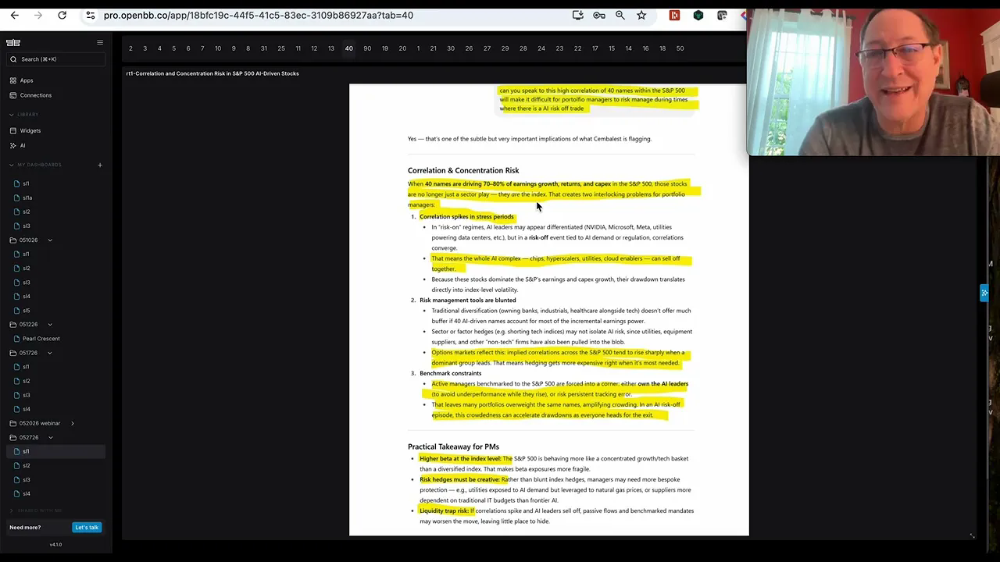
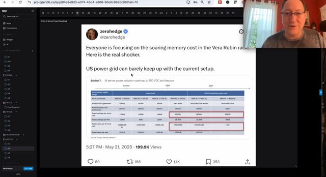
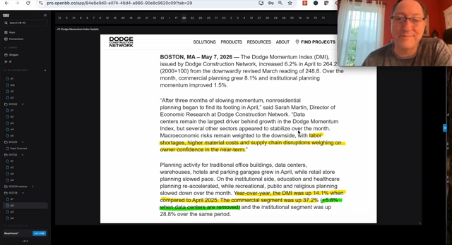
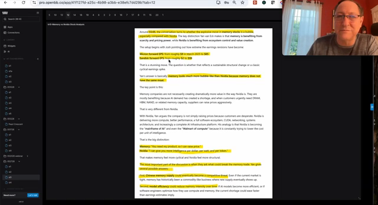

A60-Second Verdict
This is a high-value AI thesis signal: Jordi is not calling AI a bubble; he is warning that a physical-world buildout can stay secular while becoming lumpier, more inflationary, and more dangerous for crowded momentum exposure.
- Core signal: the AI trend remains real, but the next risk is bottleneck stress across memory, power, cooling, copper, substations, turbines, and data-center sequencing.
- Portfolio meaning: treat memory and high-beta AI momentum as less attractive risk/reward after the run; prioritize platform, connectivity, power, and infrastructure beneficiaries for research.
- Route: add to the AI Infrastructure and AI Market Structure research queue; do not convert this into a trade without live market, valuation, and portfolio checks.
Processor Decision
BSignal Scorecard
Maturity Sliders
CBasic Information
| Field | Value |
|---|---|
| Title | Not a Bubble, a Bottleneck: Why the Physical AI Buildout Is Setting Up the Next Regime Shift |
| Author / sender / channel | Jordi Visser, 22V Research / Jordi Visser YouTube channel |
| Date / time | Provider note dated 2026-05-24; YouTube metadata publish date 2026-05-23; video duration 59:57. |
| Source ID / URL / path | YouTube: qVMG9i_SKJI; transcript artifact: [local Mac path redacted in portal copy] |
| Processed content | YouTube metadata, automatic-caption transcript, the pasted 22V provider summary, timestamps, and five sampled visual frames from the video. |
| Not processed | The 22V portal website and PDF tracking links were not separately opened; no live market-price, portfolio-position, or valuation check was run. |
DContent Extraction
| Claim | Plain-English Meaning | Evidence Level |
|---|---|---|
| AI is not a classic bubble. | The spend is being funded by cash-rich companies with contracted demand, so the thesis is not simply "financing disappears and the trade ends." | Directly stated in transcript and pasted summary. |
| The market is extended and two-sided. | The S&P and AI leaders have had a large run; hyperscaler spenders have stalled below the 20-day moving average and momentum has started to unwind. | Directly stated; chart evidence visible in video but not fully replicated here. |
| The buildout is physical, not software-only. | Data centers require memory, racks, liquid cooling, copper, fiber, power equipment, substations, gas turbines, and sequencing. If one layer is late, the whole chain can slip. | Directly stated and visually supported by sampled frames. |
| Bottlenecks change the risk. | Jordi's chain is simple: bottlenecks create cost inflation; cost inflation creates delays; delays create revenue-recognition risk. | Directly stated in transcript and pasted summary. |
| Macro can amplify the bottleneck. | Rising oil, rising rates, stronger dollar, and inflation nowcasts can create a 1970s-style regime: higher nominal activity but lower valuation multiples. | Directly stated; macro data should be verified before action. |
| Leadership may rotate. | He favors platform and connectivity exposure over memory, sees Nvidia as more platform-like than memory, and frames independent power producers as a defensive AI expression. | Directly stated; no valuation check performed. |
| Tokenization and crypto are a possible next handoff. | He argues that agentic AI plus payments/stablecoin infrastructure may shift investor attention from physical AI infrastructure toward financial-system redesign. | Directly stated; requires separate crypto thesis work. |
EContent Evaluation
| Dimension | Assessment | RAG |
|---|---|---|
| Plausibility | High. The physical bottleneck framing is coherent: data-center capacity is constrained by equipment, power, energy, construction, and sequencing rather than only chip demand. | Green |
| Evidence strength | Good but not complete. The source gives timestamps, charts, and named examples, but the PDF/website source was not opened and external macro data was not independently verified in this run. | Amber |
| Novelty | High for portfolio construction. It reframes AI risk from "bubble or no bubble" into "bottleneck and regime timing." | Green |
| Contradiction pressure | Medium-high. It challenges any simple overweight of memory or hyperscaler spenders and pushes toward more granular AI receiver exposure. | Amber |
| Extraction limitations | The transcript is automatic captions with medium quality. Visual review was sampled, not exhaustive. The 22V note text helped anchor timestamps and thesis language. | Amber |
FInvestment Impact
| Area | Impact | Confirmation / Challenge | Implication |
|---|---|---|---|
| AI Infrastructure thesis | Supports the existing thesis that physical-layer beneficiaries deserve their own lane. | Confirms, 9/10 | Upgrade bottleneck monitoring inside the AI Infrastructure map: power, cooling, copper, substations, gas turbines, HBM, and optical/connectivity. |
| AI Market Structure thesis | Challenges simple "more AI demand means all AI equities win" logic. | Challenges, 8/10 | Separate spenders, platform toll collectors, bottleneck suppliers, and beta trades. |
| Memory exposure | Raises risk/reward caution for memory after a large move and retail inflows. | Challenges, 8/10 | Do not treat memory as a default AI overweight without a fresh market and valuation check. |
| Platform/connectivity names | Creates research priority around Nvidia, Marvell, CPUs, optical, and interconnects as potentially better-moat expressions than memory. | Creates, 7/10 | Open or update watchlist candidates only after instrument identity, valuation, and current-price checks. |
| Power / IPPs | Frames Vistra and independent power producers as lower-beta or defensive AI expressions if momentum unwinds. | Creates, 7/10 | Research the IPP basket as AI infrastructure defense; no sizing without portfolio context. |
| Crypto / tokenization | Suggests a later handoff from AI infrastructure to financial-system redesign via stablecoins, tokenization, and on-chain settlement. | Creates, 6/10 | Route to a separate crypto/tokenization thesis note; do not mix with the physical-capex watchlist. |
Watchlist, Deep Dive, Monitor, and Needs live market check, not Buy/Sell labels.GConcrete Actions
Add this signal as evidence that physical AI capacity can stay secular while becoming inflationary, delayed, and volatile.
Compare Nvidia, Marvell, Intel/CPU, optical/interconnect, and memory exposures. The question is moat and risk/reward, not whether AI demand exists.
Use Vistra and broader independent power producers as a candidate defensive expression if AI momentum beta unwinds.
The regime-shift claim depends on macro pressure persisting, not only on AI demand.
The financial-system redesign claim may matter, but it is a second-order handoff and should not dilute the physical AI bottleneck action list.
HDetailed Appendix For Understanding
This appendix is intentionally detailed. The paragraph headings summarize the paragraph, so Rene can scan the section quickly and still get the substance without reading or watching the source end to end.




The source rejects the simplistic "AI bubble" frame.
Jordi is not saying the AI buildout is fake. His point is more subtle: the largest buyers have cash, the revenue opportunity is visible, and demand is likely contracted or expected. That makes this different from a financing bubble where the entire theme collapses when capital disappears. The risk is not that AI suddenly stops mattering; the risk is that execution becomes messy.
The bottleneck argument is about sequencing, not just shortages.
A data center is not useful because one input exists. It needs chips, memory, racks, cooling, networking, copper, fiber, electricity, substations, permits, turbines, labor, and timing. If one layer is late, the revenue tied to the whole project can shift out. This is why a physical-capex AI cycle can have strong demand and still disappoint investors quarter to quarter.
The $8 trillion buildout claim matters because the early stage is already stressed.
The provided 22V text says only about 12% of the estimated buildout had been spent through Q1 and about 18% would be spent by year-end. The exact number needs outside verification before it becomes a portfolio assumption, but the direction matters: if the system is already strained before the biggest spending years, smooth-line forecasts are probably too optimistic.
The macro overlay can turn bottlenecks into a regime shift.
Jordi connects the AI bottleneck to oil, rates, the dollar, and inflation. In plain English: if oil and rates rise while equity momentum unwinds, investors may stop paying peak multiples for long-duration AI winners. That is the 1970s-style comparison: nominal growth can be strong, but valuation multiples compress because input costs and discount rates rise.
The memory-versus-platform distinction is the key equity-selection point.
Memory can benefit sharply from scarcity, but scarcity pricing can attract competition, trigger customer pushback, or be disrupted by model-efficiency gains. A platform-style supplier with software, ecosystem, and switching-cost advantages may deserve a different multiple. That is why the source is more cautious on memory and more constructive on Nvidia, Marvell, CPUs, optical, and connectivity.
The power/IPPs idea is a defensive-AI candidate, not a completed trade.
Jordi frames Vistra and independent power producers as a defensive side of AI because power remains necessary even if high-beta semiconductor momentum cools. That is investable enough to research, but it still needs price, valuation, balance-sheet, regulatory, and portfolio-context checks before any position-sizing discussion.
The crypto handoff should be separated from the physical AI workstream.
The source argues that agents, tokenization, stablecoins, and on-chain settlement may become the next narrative after physical AI infrastructure. This is plausible as a watch item, but it belongs in a separate tokenization/crypto thesis review because the evidence, instruments, and risk controls are different.
ISource Handling
| Artifact | Status |
|---|---|
| Original YouTube video | Preserved at https://www.youtube.com/watch?v=qVMG9i_SKJI. |
| Transcript | Extracted with A04 using automatic captions, quality medium, no browser auth, no OpenAI fallback. Saved in the local A04 transcript cache. |
| Generated HTML report | Saved as research-signal-baselines/signal-to-alpha-jordi-ai-bottleneck-regime-shift-2026-05-24.html. |
| Visual evidence | Five sampled frames copied to research-signal-baselines/assets/. The frame review is representative, not exhaustive. |
| Obsidian note | Created as DragonShield Research Obsidian/01 Signals/2026/2026-05/2026-05-24 Jordi Visser - AI Bottleneck Regime Shift.md. |
| Research Review Queue | Set to ready with review id sig-2026-05-24-jordi-ai-bottleneck-regime-shift. |
Verification footnote: transcript extraction used A04 YouTube Holocron; report structure follows A22 Signal-to-Alpha. No DragonShieldNG holdings, trades, sizing policy, risk limits, or official portfolio state were changed.